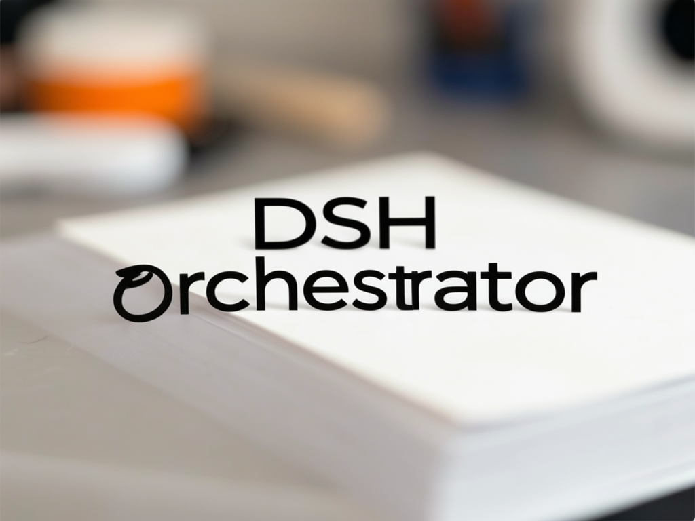

Run DSH, Codex CLI, Claude Code, Git, and GitHub CLI in the same workspace, with persistent sessions and isolated worktrees.

A local, auditable layer that connects DSH to interactive agents without handing over control of the host Docker.
DSH, Codex, and Claude see the same projects, Git, and persistent authentications.
Tmux keeps each task active even when the browser closes, with input and output through the dashboard.
Optional worktrees create isolated branches and directories to reduce collisions between agents.
DSH calls MCP tools; the orchestrator validates the project and opens the agent in a tmux session that you can monitor via the web or CLI.
The build downloads DSH and the other CLIs. You only need Docker and the accounts you plan to use.
On Debian or Ubuntu, use the included installer.
./scripts/install-docker-debian.shOpenAI, Anthropic, and GitHub are authenticated through their official flows.
./scripts/login.sh allDSH can use the cloud or a local model on the host.
./scripts/configure-openrouter.shThe commands below are the same ones used by the real project.
Download the runtime and enter the folder.
git clone git@github.com:inematds/dsh-orchestrator.git cd dsh-orchestrator
It generates the token, chooses available ports, builds the image, and starts the services.
./scripts/bootstrap.sh
Credentials stay outside the project tree, in the runtime data directory.
./scripts/login.sh codex ./scripts/login.sh claude ./scripts/login.sh github
Use the dashboard or internal CLI to start an agent in its own worktree.
./scripts/shell.sh orch start codex --cwd /workspace/meu-repo \ --name api --prompt "implemente os testes" --worktree
List sessions, capture output, or send new instructions without losing the process.
orch list orch output ID --lines 500 orch send ID "rode os testes e corrija as falhas"
The same infrastructure can be operated manually or through DSH via MCP.
DSH lists sessions, delegates an implementation to Codex, and monitors the output through structured MCP tools.
Codex works on the API while Claude explores the documentation, each in its own branch and worktree.
The core already works; upcoming phases can expand observability and governance.